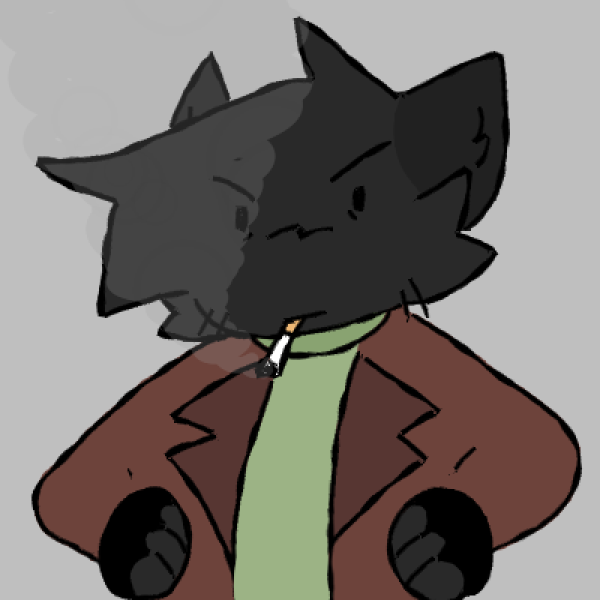

|
Ivory, sometimes called Ivy, is a resident of Shmorperville. He is the current leader and founder of the Legacykit cult, and former leader and founder of the now defunct Mud Brick cult.
APPEARANCE Ivory is an anthromoporphic black cat. His ears and tail are a slightly darker shade from the rest of his body, and on his chest is a white heart-shaped mark that is obscured by his clothes. He wears a sage-green sweater, and a dark brown unbuttoned trenchcoat over it. He also wears black jeans and black boots. PERSONALITY Ivory comes off as cold-hearted and occasionally rude, having a short temper and being snappy with those who get on his nerves. Due to past trauma, he's often paranoid and has strong faith to Legacykit in belief that He will "save" him. He has a hard time putting trust into people, but acts somewhat kindly to the few people he does trust and care about, and often has more patience for them. HISTORY Ivory grew up in a small town far away from what is now Shmorperville during the war, raised in a strict and pro-Eddie household, leading him to grow up resentful and somewhat fearful of Eddie and those who follow him. He later ran away, and fought to fend for himself in the world during the post-war period. He was employed at a few small jobs, getting fired quickly due to incompetence and insubordination. After giving up on getting a job to stick with, he began stealing from abandoned shops and small houses for resources, and got into many squabbles with the law. When he came to Shmorperville, he discovered a brick of mud poking out of the ground from a Trail Ruin, that he would bring back to the town and give it the name of "Le Cursed Mud Brick" and tell the others that this mud brick was a holy figure to them. Then he, Kit, Jasper, Ryan, and Shoe would form a Mud Brick "religion" (see; cult), though Ivory would later abandon the Mud Brick as he did not want to lead the others into believing in a false god in the form of the Mud Brick, and went on to form the Legacykit cult. RELATIONSHIPS Jasper is Ivory's fellow cult member, and a close friend of his. Ivory trusts Jasper the most out of everyone in Shmorperville, though he still has his suspicions, as per everybody. He believes Jasper to be a good, faithful member of the cult, and enjoys his company without having to simply tolerate him. They are currently married, though it is for tax benefits only. Kit, being Legacykit's prophet, is of great importance to Ivory and his cult. Though, Ivory doesn't quite enjoy being around Kit as much as he does the others, and often makes himself put up with Kit due to their importance in the cult. Legacykit's possession of Kit disappointed Ivory, as he had been hoping for a slightly more competent prophet, but Ivory has grown to tolerate Kit more than he had when they first met. Though, Ivory is irritated by Kit's close friendship with Shoe, and often tries to get them to stop living with Shoe or cut them off entirely. Shoe is Ivory's sworn enemy, as Shoe is a strong believer in Eddie. Ivory has made plans to assassinate Shoe on occasion, but they had ultimately failed due to a multitude of reasons, such as bad timing, Kit's involvement, or Shoe's ability to defend themself. Their relations started off fine, though when Shoe began expressing open belief in Eddie, Ivory became hateful of them and swore himself to take them down. While Ivory and Ryan aren't all too close, they occasionally go out to drink or smoke together. Though he's sometimes disturbed by Ryan's violent tendencies, Ivory has a bit of sympathy for him. Ivory enjoys Zoxie's company, though he has suspicions about her. Due to the newly rising Reisen religion, Ivory has distanced himself from Zoxie, and doesn't believe that he can currently trust her. Ivory is a bit annoyed by Ruby, and somewhat disturbed by her. He finds her questions intrusive and tends to push them away instead of answering them. TRIVIA
Back to directory |
Ivory 
|